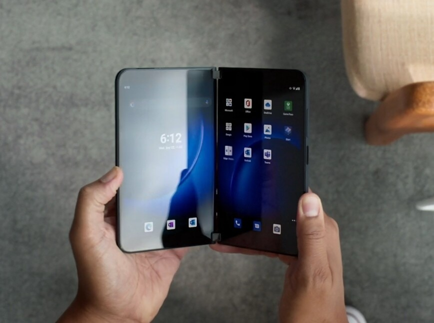
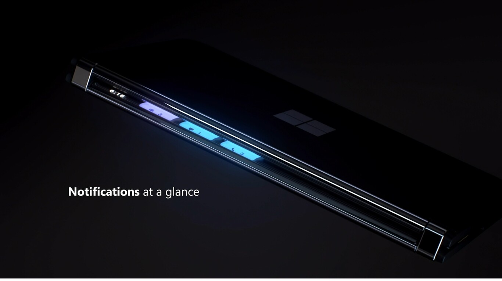

Microsoft Surface Duo 2: the second attempt at a folding mobile adds two screens with 90Hz and a triple camera at the height
22 September 2021 Updated 22 September 2021, 15:12
Comments
Microsoft keeps trying in the mobile field. This year with the new Microsoft Surface Duo 2, your mobile with Android, home applications and a peculiar folding design with two screens joined with a hinge.
These are the characteristics of the new Surface Duo 2. From the improvement in the screens, support for 5G connectivity and an improvement of the edges and the design of the device. The Surface Duo 2 also incorporates a triple rear camera, taking a leap from the first generation that paled in this section.
Microsoft Surface Duo 2 datasheet
|
Microsoft Surface Duo 2 |
|
|---|---|
| screen |
Open: Dual Pixel Sense Fusion 8.3 ”OLED (3: 2), 90 Hz Closed: Single Pixel Sense 5.8 "(1892 x 1,344 px), 90 Hz Corning Gorilla Glass |
| processor |
qualcomm snapdragon 888 |
| cameras |
Main: 12MP, f / 1.7, OIS Wide angle: 16MP, f / 2.2 Telephoto: 12MP, f / 2.4, OIS |
| operative system |
android 11 |
| batery |
4.500 mAh |
| conectivity |
BT 5.0, NFC, 5G |
| price |
$ 1,499 |
Two screens that make up an 8.3-inch device
The Surface Duo 2 will offer two screens connected by a hinge, being able to use it both in one position and in another. Combined, the two panels form an 8.3-inch diagonal screen. In addition, this year the brightness of the AMOLED panels of 5.8 "each has been improved and the refresh rate has been increased to 90 Hz.
At the design level, the device seems more compact than the first generation and on the hinge, when closed, the time and a notification bar are displayed.
For the sound system, Microsoft explains that the Surface Duo 2 will offer stereo sound regardless of how we hold the device. Inside, a Qualcomm Snapdragon 888 processor with 5G connectivity will be offered.
Microsoft explains that 150 Android games such as 'Asphalt Legends 9', 'Dungeon Hunter 5' or 'Modern Combat 5' are optimized to use one of the two screens as a controller and see the game on the second.